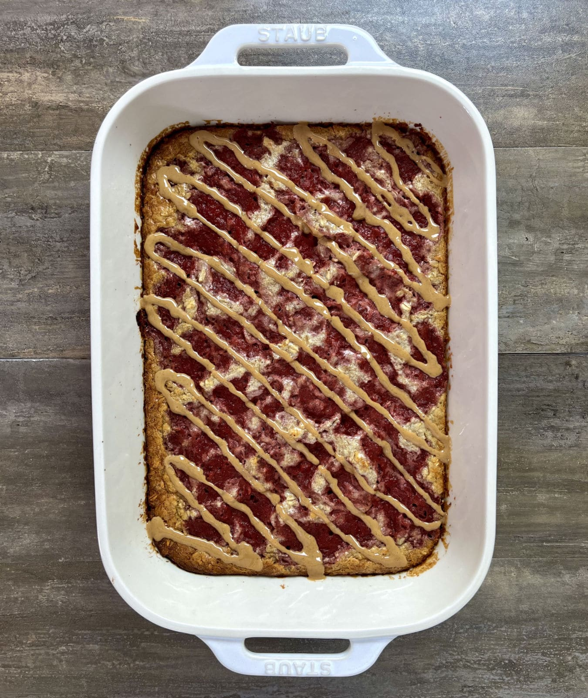

PB and J baked oatmeal

Description
PB and J Baked Oatmeal made from a homemade strawberry jelly and peanut
butter combined inside of an oatmeal and egg bake. A great breakfast or
bedtime snack with a decent dose of protein.
Ingredients
- 3 cups (240 g) old fashioned oats
- 2 scoops (60 g) vanilla protein powder
- 1 tsp (4 g) baking powder
- 3 tbsp (48 g) peanut butter
- 2 tbsp (42 g) maple syrup
- 10 tbsp (150 g) liquid egg whites or 2 eggs
- 2 cups (480 g) milk
Steps
- Preheat your oven to 350°F.
-
In a large bowl, mix together the oats, protein powder, and baking
powder.
-
Add in the egg whites, milk, syrup, and 3 tbsp of peanut butter. Stir to
combine.
- Spray a 13"x9" pan with oil and add the oat mixture.
-
Spoon the jelly over the top and swirl it into the oat mixture using a
butter knife.
- Bake for 35-40 minutes.
On top of the page
Return to home page